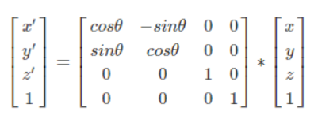

简易翻页效果实现
2020/07/03
qiutang
翻页效果主要分为顶点着色器动画和UI遮罩动画。我简单的在Unity上分别实现这两个，然后移植到UE上面去。
顶点着色器实现
实际上就是网格顶点变形动画，片元着色器就是简单的采样纹理着色，注意正面与背面的区别，重点在于顶点着色器，它的工作内容可以分为两大部分：
#1 顶点翻页变形，选择合适的圆锥曲线或者正弦曲线函数做顶点变化。
#2 将顶点绕轴旋转合适的角度。
我首先实现 #2，然后再实现 #1。
首先是将顶点绕轴旋转合适的角度，输入是当前页面的旋转角度，然后将所有的顶点绕着装订轴旋转该角度。
输入模型是一个平面模型，10 * 10的平面网格，默认中心点在原点，因此需要将所有顶点都平移一段距离，使得旋转中心轴线在网格的左边或者右边。
// 旋转前将所有顶点移动到装订线处
v.vertex.x -= _PinLine;
// 在这里旋转所有顶点
// 旋转后再移动回原位置
v.vertex.x += _PinLine;
然后旋转部分是绕z轴旋转，旋转矩阵为：

转换为代码是：
// 绕z轴旋转
float angle_rad = radians(-_Angle);
float s;float c;sincos(angle_rad,s,c);
float2 rotate_ret = v.vertex.xy;
v.vertex.x = rotate_ret.x * c + rotate_ret.y * s;
v.vertex.y = rotate_ret.y * c - rotate_ret.x * s;
我这里把矩阵展开了，实际上是一样的效果。
现在实现平面网格沿着z轴旋转的效果了。
接下来加上顶点的变形。
根据你选择数学函数的不同，顶点变形的效果也会呈现不同的形状，简单的有正弦曲面函数，复杂的有圆锥曲面函数，也可以用多个频率的正弦曲面函数叠加得到一个好看的形状，我这里试了正弦函数和圆锥曲面函数：
首先是正弦函数：
// 在这里执行顶点变形动画
float factor = saturate(1 - abs(90 - _Angle) / 90);
v.vertex.y -= _Factor * sin(v.vertex.x * 0.4f - _FactorY * v.vertex.x) * factor;
v.vertex.x -= v.vertex.x * factor * _FactorX;
这里直接根据 y = sin(nx)来计算函数曲线。得到的翻页曲面也是正弦形状的。
我还添加了系数控制的FactorX和FactorY以及总的y变形系数，便于自定义变形效果。
得到的翻页效果如下：

多页面叠加时可能会有Z-Fighting，这里在前页面Pass渲染时添加上一个Offset来避免。
注：关于这个Offset，我查到的资料有：
Unity论坛：
或者KH组的解释：
也就是绘制时，每一个片元的深度值都会增加一个偏移量offset，它的计算方式：
offset = (m * factor) + (r * units)
其中，m是多边形各边深度的斜率中的最大值，它在光栅化阶段计算得到。在光栅化阶段，若一个多边形越是与近裁剪面平行，每个边的深度变化越接近0，m就越接近0。r是NDC空间下的最小深度单位，它是图形Api设置的。
核心步骤为：

一个大于0 的 offset 会把模型推更远一点的位置，一个小于0的offset 会把模型拉近。
Unity Shader的Offset有两个参数，第一个是因子factor，第二个是单位units。
渲染页面时，为避免与其他重叠页面产生z-fight，于是使用Offset，我这里想让Offset 按照多边形的深度斜率变化递增，并且最少offset一个单位的深度，所以设：
Offset -1,-1
当前完整的Shader代码如下：
Shader "GraphicsLibrary/FlipPaper/SineFlip"
{
Properties
{
_FrontPage ("Page Front", 2D) = "white" {}
_BackPage ("Page Back" , 2D) = "white" {}
_Angle ("Curl Angle", Range(0,180)) = 0
_PinLine ("Pin Line", float) = 0
_Amount("Amount",Range(0,2)) = 0
_FactorX("Factor X",Range(0,1)) = 0
_FactorY("Factor Y",Range(0,1)) = 0
}
CGINCLUDE
#include "UnityCG.cginc"
struct appdata
{
float4 vertex : POSITION;
float2 uv : TEXCOORD0;
};
struct v2f
{
float4 pos : SV_POSITION;
float2 uv : TEXCOORD0;
};
sampler2D _FrontPage;
float4 _FrontPage_ST;
sampler2D _BackPage;
float4 _BackPage_ST;
half _Angle;
half _PinLine;
half _Amount;
half _FactorX;
half _FactorY;
inline v2f vert_factory (appdata v,bool isFront)
{
v2f o;
// 旋转前将所有顶点移动到装订线处
v.vertex.x += _PinLine;
// 在这里执行顶点变形动画
float factor = saturate(1 - abs(90 - _Angle) / 90);
v.vertex.y -= _Amount * sin(v.vertex.x * 0.4f - _FactorY * v.vertex.x) * factor;
v.vertex.x -= v.vertex.x * factor * _FactorX;
// 绕z轴旋转
float angle_rad = radians(-_Angle);
float s;float c;sincos(angle_rad,s,c);
float2 rotate_ret = v.vertex.xy;
v.vertex.x = rotate_ret.x * c + rotate_ret.y * s;
v.vertex.y = rotate_ret.y * c - rotate_ret.x * s;
// 旋转后再移动回原位置
v.vertex.x -= _PinLine;
o.pos = UnityObjectToClipPos(v.vertex);
if(isFront)
{
o.uv = TRANSFORM_TEX(v.uv, _FrontPage);
}
else
{
o.uv = TRANSFORM_TEX(v.uv, _BackPage);
}
return o;
}
ENDCG
SubShader
{
Pass
{
Name "FRONT"
Offset -1,-1
Tags{ "LightMode" = "LightweightForward" }
Cull Back
CGPROGRAM
#pragma vertex vert_front
#pragma fragment frag_front
v2f vert_front(appdata v)
{
return vert_factory(v,true);
}
fixed4 frag_front(v2f i) : SV_Target
{
return tex2D(_FrontPage,i.uv);
}
ENDCG
}
Pass
{
Name "BACK"
Tags{ "LightMode" = "SRPDefaultUnlit" }
Cull Front
Offset -1,-1
CGPROGRAM
#pragma vertex vert_back
#pragma fragment frag_back
v2f vert_back(appdata v)
{
return vert_factory(v,false);
}
fixed4 frag_back(v2f i) : SV_Target
{
return tex2D(_BackPage,i.uv);
}
ENDCG
}
}
}
正弦函数曲面用来模拟书页从中间开始翻很合适，但是如果想要模拟从边角开始翻页，就需要换一个变形方程，比较合适的是圆锥曲面方程，使用它计算页面在圆锥曲面上的投影位置，原理示意图如下：

数学原理在http://www2.parc.com/istl/groups/uir/publications/items/UIR-2004-10-Hong-DeformingPages.pdf中，我不喜欢推导圆锥曲面公式，所以结论直接拿来用了。
现在在顶点着色器中已知任意网格点的坐标P，参数A（我称它为圆锥顶点ConeTop），参数θ（我称它为圆锥旋转角ConeRotateAngle），那么，点O经过圆锥曲面变换后，它落在圆锥面上的坐标T表示如下：

其中：

转化为着色器代码如下：
// 在这里执行顶点变形动画
float theta_rad = radians(_ConeRotateAngle);
float R = sqrt(v.vertex.x * v.vertex.x + pow(v.vertex.z - _ConeTop,2));
float r = R * sin(theta_rad);
float alpha = asin(v.vertex.x / R);
float beta = alpha / sin(theta_rad);
v.vertex.x = r * sin(beta);
v.vertex.z = R + _ConeTop - r * (1 - cos(beta)) * sin(theta_rad);
v.vertex.y = - r * (1 - cos(beta)) * cos(theta_rad);
注意这里z和y与公式中不同，因为Unity的y轴向上，所以交换yz。
圆锥曲面翻页效果如下：

为了方便控制，在使用圆锥曲线翻页时，需要建立起Angle和A、θ的函数关系，我这里直接用Angle的值在0-180中smoothstep，然后lerp + clamp计算出A和θ。
UI遮罩动画
UI遮罩动画分两种，一种是直接在UI上卡动画帧，然后每帧对活动页的Image长方形做Shear剪切变换，这个比较简单，然后注意的是活动页采样的纹理需要额外绘制一张翻页变形的书页纹理(然后我们项目最后选用的也是这种做法)。
第二种则是用Mask遮罩挡住当前翻页部分，伪装成3D翻页，unitybookpagecurl就是这种做法。